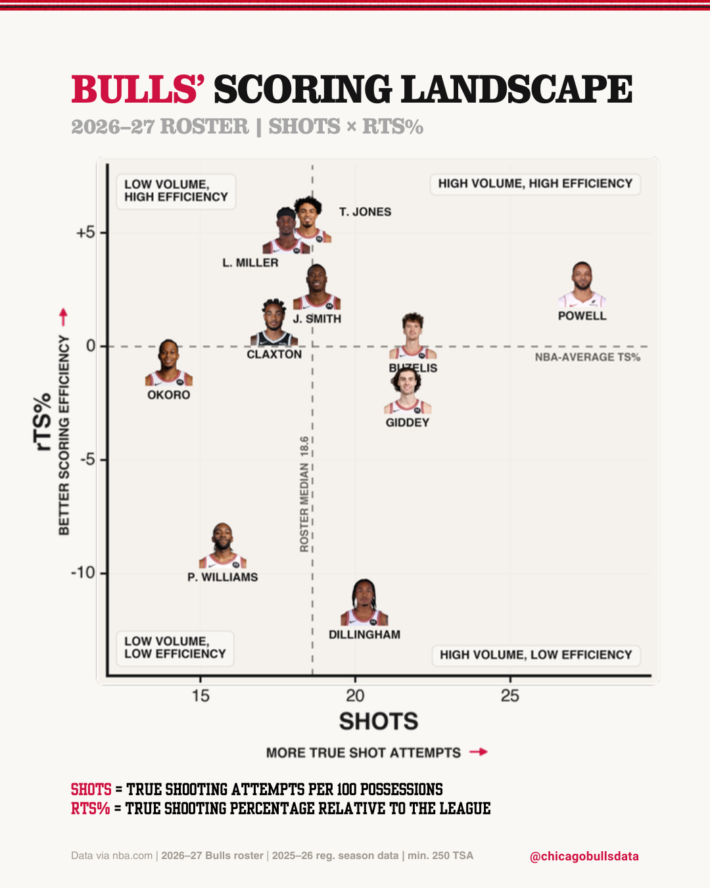
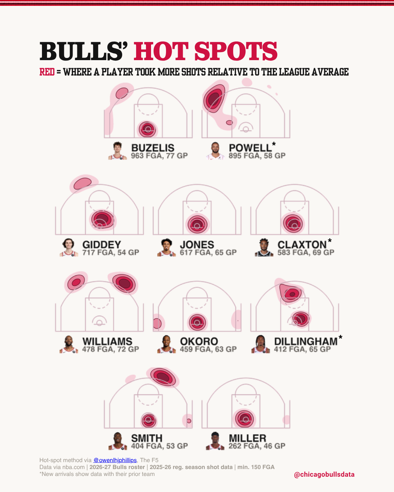

Design System
@chicagobullsdata — the visual companion to DESIGN.md.
DESIGN.md is the canonical record; this page is for scanning. The colors below are
generated from the same constants as bulls/graphics/house.py and are enforced by
tests/test_design_tokens.py.
Color
| Token | Hex | Role |
|---|---|---|
RED | #CE1141 | Positive / above / payoff emphasis |
BULLS_BLACK | #141414 | Negative / below / heavy fills |
INK | #1A1A1A | Primary text, data lines |
MUTED | #777777 | Secondary text, axis labels |
FAINT | #AAAAAA | Quietest text tier |
RULE | #DDDDDD | Table rules, hairlines |
SUBTITLE_RULE | #CFCFCF | Separator ticks |
GRIDLINE | #F0F0F0 | Chart gridlines |
WHITE | #FFFFFF | The white theme's canvas — not the post default |
Post canvas
#FAF8F5 — warm off-white. Every post page sits on it. Charts export
transparent and inherit it, so chart colors must read against this, not white.
Magnitude colormap
craft.MAGNITUDE_CMAP: #F2EAE8 → #CE1141 →
#7E0C2B. Use when a bar or cell fill encodes magnitude.
force_sign). Revisit if a table post ever leans on color alone.
Four alternate canvas themes (white, newsprint, blackout,
hardwood) remain in house.THEMES but are parked — the
account runs on #FAF8F5. Full token table in DESIGN.md §2.
Typography
Canva Brand Kit — posts
| Role | Face |
|---|---|
| Titles | Clarendon Narrow |
| Subtitles & section headers | Yearbook Solid |
| Body | Helvetica Bold |
Clarendon Narrow and Yearbook Solid are Canva faces — not installed locally, never rendered by Python. If a chart seems to need a title, that title belongs on the Canva page.
Charts — Python
Helvetica, matching the Canva body face so labels read as part of the page. Use
house.helvetica() / house.helvetica("bold").
house.helvetica() splits
the requested face into cache/fonts/ and loads it by filename — the licensed system
font is never committed. Falls back to Archivo off macOS.
Chart Asset Contract
- Export transparent. The Canva page supplies
#FAF8F5. - Export larger than the placed size. Canva output is judged from the downloaded page at feed size; DPI metadata can't rescue an undersized asset.
- The chart carries data, not framing. Axis labels, value labels, names, medians, and annotations go in the chart. Title, subtitle, source line, watermark, and editorial copy go on the page.
- Prototypes print a Canva copy block — the exact strings to paste — so page numbers and chart numbers come from the same run. Never retype a value by eye.
- Pull colors from the theme tokens (
theme.ink,theme.accent,theme.grid), not the white-canvas module constants.
Marks & Annotations
Every marker must explain a bend in the data. If the line doesn't turn there, it's trivia — cut it.
- Reference lines —
MUTED, dashed(0, (4, 3)), 1.2 lw, labelled with what the line is ("MEDIAN 34.1%"). - Event markers — ~1 hero, at most 1 supporting. Stacked dated label: name in Helvetica bold 9 pt over the date in 9 pt regular, right-aligned 8 px off the line.
- Callouts — 3–4 max. Bold label, thin straight connector
(
arrowstyle="-",MUTED, 1.0 lw) to the point. - Emphasis is meaning-driven, never decorative — at most one payoff element per chart.
Faces
The highest-stopping-power object on a chart — use sparingly. Circular crop via
craft.headshot_label; a red border ring means "the payoff." Position so geometry
does the pointing. Missing headshots fall back to a placeholder disc.
What Every Post Shares
#FAF8F5canvas, 1080×1350 (4:5). No other backgrounds, no textures.- Red/black as the only meaningful colors — a thumbnail reads red + black + off-white before the title is legible.
- Clarendon Narrow title, Yearbook Solid headers, Helvetica Bold body, deliberate red emphasis.
- Visible authorship on every page; visible source, qualification, and coverage on every data-bearing page. These may move to fit the composition but never disappear.
- One idea per post. The title states it; if the title needs "and," it's two posts.
- Pretty and instantly legible. When a detail would help a nerd but confuse a casual fan, the casual fan wins.
- Take the structure, not the look. Adopt formats from the best accounts, rendered in our palette and type.
In the Wild


Legacy — Python Full Layout
Earlier posts (through the Summer League reports) were composed entirely in Matplotlib:
house.draw_header, the 16 px jersey stripe, an auto-fitted Academic M54 title with
red outline, tick-separated subtitle, and the Data via nba.com /
@chicagobullsdata footer pair on the y=40 baseline. Archivo was the body face.
Not the path for new posts — kept working so existing prototypes stay
maintainable. Full spec in DESIGN.md under "Legacy." Academic M54 is licensed
non-commercial only.